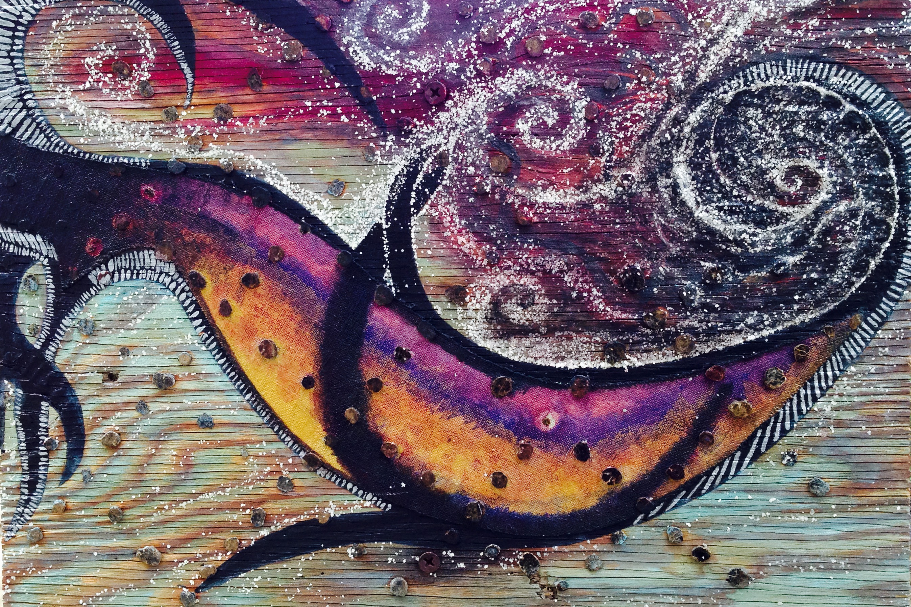

Rebecca Spear,
MA, AMFT #121560
I am an Associate Marriage Family Therapist:
supervised by Dr. Melissa Springstead Cahill, PsyD, MFT #47113 during employment at Anchor Children and
Family Counseling, Inc., Pasadena, CA
supervised by Dr. Lori Tyler, PhD, M.O.B.; Clinical Psychologist PSY20342
while interning at the Kieffer E. Franz Clinic of the C. G. Jung Institute of Los Angeles, CA
Welcome to my psychotherapy site. Help and understanding are
nearby.
I work in the holistic psychodynamic traditions of Carl G. Jung and
analytical psychology to compassionately assist you in releasing
negative patterns which have outgrown their usefulness.
I work with children, adolescents, couples, and
families. Click on the tabs to see how I use different
therapeutic modalities with my clients.
Through evidence-based interventions from brain research and
neuroscience I utilize Depth Psychology, Brainspotting (BSP),
Somatic Experiencing (SE), Mindful Awareness Practices (MAPS),
Dream Analysis, and your own creative spark in Narrative
Therapy and Art Therapy to unlock your true potential in
becoming the unique self you are meant to be.
